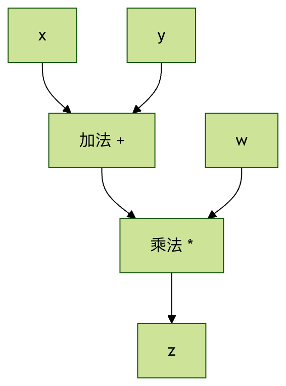
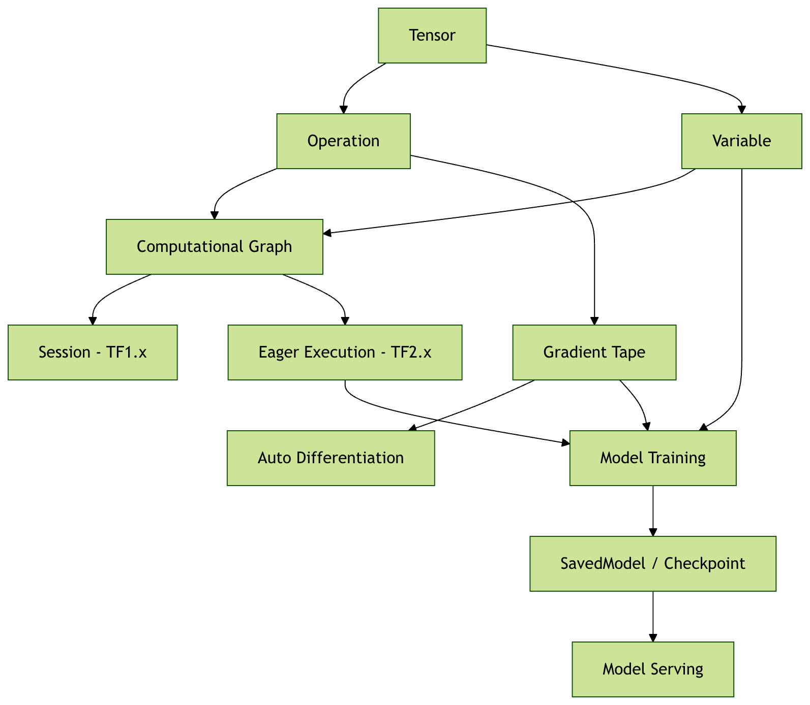

TensorFlow Core Concepts
TensorFlow's name comes from the core structures it uses to process data - Tensor and Flow.
TensorFlow is an end-to-end open-source machine learning platform. Its core advantages are:
- Flexible computational graph model: supports both dynamic graph and static graph modes
- Cross-platform deployment capability: can run on CPU, GPU, TPU, and mobile devices
- Rich ecosystem: includes sub-projects such as TensorFlow Lite (mobile) and TensorFlow.js (browser)
- Production ready: provides a complete toolchain from research to production
Core Concepts Explained
Tensor
A tensor is the most basic data structure in TensorFlow. It can be understood asa multidimensional arrayin a generalized sense.
Mathematically, a tensor is a multilinear function that can be used to represent linear relationships among vectors, scalars, and other tensors.
Simple analogy：
- Scalar (0-dimensional tensor): a number, such as
5 - Vector (1-dimensional tensor): a list of numbers, such as
[1, 2, 3, 4] - Matrix (2-dimensional tensor): a table of numbers, such as
[[1, 2], [3, 4]] - 3-dimensional tensor: a cube of numbers, such as a color image (height × width × color channels)
- Higher-dimensional tensors: for example, video data (time × height × width × color channels)
Key Properties of Tensors
Example
import tensorflow as tf
# 创建一个 2x3 的矩阵张量
tensor = tf.constant([[1, 2, 3], [4, 5, 6]])
print(f"形状 (Shape): {tensor.shape}") # (2, 3)
print(f"数据类型 (Dtype): {tensor.dtype}") # int32
print(f"维度 (Rank): {tf.rank(tensor)}") # 2
print(f"设备 (Device): {tensor.device}") # /job:localhost/replica:0/task:0/device:CPU:0
Explanation of Key Properties：
Shape: describes the size of each dimension
(2, 3)represents a matrix with 2 rows and 3 columns(224, 224, 3)represents an RGB image of 224×224 pixels
Data type (Dtype): the type of data in the tensor
tf.float32: 32-bit floating point (most common)tf.int32: 32-bit integertf.bool: booleantf.string: string
Dimension / Rank: the dimensionality of a tensor
- Scalar: rank 0
- Vector: rank 1
- Matrix: rank 2
Device: the device location where the tensor is stored
- CPU：
/device:CPU:0 - GPU：
/device:GPU:0
Significance of Tensors in Machine Learning
Data representation：
- Input data: images, text, and audio can all be represented as tensors
- Model parameters: weights and biases are tensors
- Intermediate results: all data during computation are tensors
- Output results: prediction results, loss values, etc.
Practical examples：
- Image classification: input tensor shape
(batch_size, height, width, channels) - Text processing: input tensor shape
(batch_size, sequence_length) - Time series: input tensor shape
(batch_size, time_steps, features)
Computational Graph
A computational graph is a graph structure that usesnodes和边to represent mathematical operations:
- Node: represents mathematical operations (addition, multiplication, activation functions, etc.)
- Edge: represents the path of data flow (tensors)
Simple example：
计算 z = (x + y) * w 的计算图：
x ──┐
├─→ [+] ──→ [×] ──→ z
y ──┘ ├
w ────────────┘

Advantages of Computational Graphs
1. Automatic differentiation：
- Can automatically compute gradients and implement backpropagation
- No need to manually derive complex gradient formulas
2. Optimization opportunities：
- Compile-time optimization: merge operations, eliminate redundancy
- Runtime optimization: memory reuse, parallel computing
3. Visual debugging：
- Use TensorBoard to visualize model structure
- Easier to understand and debug complex models
4. Distributed computing：
- Different parts of the graph can be assigned to different devices
- Supports distributed training across machines
Static Graph vs Dynamic Graph
TensorFlow 1.x (static graph)：
Example
import tensorflow.compat.v1 as tf
tf.disable_v2_behavior()
# 定义计算图
x = tf.placeholder(tf.float32, shape=[None, 784])
W = tf.Variable(tf.random.normal([784, 10]))
b = tf.Variable(tf.zeros([10]))
y = tf.matmul(x, W) + b
# 创建会话并执行
with tf.Session() as sess:
sess.run(tf.global_variables_initializer())
result = sess.run(y, feed_dict={x: input_data})
TensorFlow 2.x (dynamic graph / eager execution)：
Example
import tensorflow as tf
# 直接执行运算
x = tf.constant([[1.0, 2.0, 3.0]])
W = tf.Variable(tf.random.normal([3, 2]))
b = tf.Variable(tf.zeros([2]))
y = tf.matmul(x, W) + b
print(y) # 立即得到结果
Session and Eager Execution
Session Mechanism in TensorFlow 1.x
In TensorFlow 1.x, the construction and execution of the computational graph are separated:
Two-stage process：
- Construction stage: define the computational graph, but do not perform any computation
- Execution stage: run the graph in a session and obtain results
The Role of the Session：
- Manage the execution environment of the graph
- Allocate and manage resources (memory, devices)
- Provide the context for graph execution
3.2 Eager Execution in TensorFlow 2.x
TensorFlow 2.x enables eager execution by default, making TensorFlow more "Pythonic":
Features of Eager Execution：
- Immediate evaluation: operations are executed immediately after definition
- Easy to debug: can use Python debugging tools
- Intuitive programming: just like writing normal Python code
Comparison example：
Example
import tensorflow as tf
a = tf.constant(2.0)
b = tf.constant(3.0)
c = a + b
print(f"结果: {c}") # 结果: 5.0
# 可以直接访问值
print(f"c 的 numpy 值: {c.numpy()}") # c 的 numpy 值: 5.0
Graph Mode vs Eager Execution Mode
Eager execution mode (default, suitable for development and debugging)：
- Operations execute immediately
- Easy to debug and understand
- Slightly lower performance
Graph mode (suitable for production deployment)：
- Pre-build the complete computation graph
- Better optimization opportunities
- Higher execution efficiency
Switch to graph mode：
Example
def compute_function(x, y):
return x * y + x
# This function will be compiled into a graph
result = compute_function(tf.constant(2.0), tf.constant(3.0))
Variable and Constant
Constant
A constant isan immutabletensor that cannot be modified once created:
Example
scalar_const = tf.constant(3.14)
vector_const = tf.constant([1, 2, 3, 4])
matrix_const = tf.constant([[1, 2], [3, 4]])
# The value of a constant cannot be changed
print(scalar_const) # tf.Tensor(3.14, shape=(), dtype=float32)
Uses of constants：
- Store hyperparameters (learning rate, batch size, etc.)
- Store configuration data that doesn't need training
- Serve as fixed values in computations
Variable
A variable isa mutabletensor, typically used to store model parameters:
Example
weight = tf.Variable(tf.random.normal([2, 3]))
bias = tf.Variable(tf.zeros([3]))
print(f"Initial weights:\n{weight}")
# Modify the value of the variable
weight.assign(tf.ones([2, 3]))
print(f"Modified weights:\n{weight}")
# Partial update
weight[0, 0].assign(5.0)
print(f"After partial update:\n{weight}")
Key characteristics of variables：
- State persistence: maintains state during training
- Gradient tracking: can compute gradients with respect to variables
- Optimizable: can be updated by optimization algorithms
- Saveable: can be saved to checkpoint files
Use Cases: Variable vs Constant
| Property | Variable | Constant |
|---|---|---|
| Mutability | Modifiable | Not modifiable |
| Primary use | Model parameters (weights, biases) | Hyperparameters, input data |
| Gradient computation | Supported | Not supported |
| Memory usage | Persistent storage | Temporary storage |
| Typical examples | W = tf.Variable(...) |
learning_rate = tf.constant(0.01) |
Data Flow and Automatic Differentiation
Forward Propagation
The process where data flows from input nodes to output nodes in the computation graph:
Example
import tensorflow as tf
# Input data
x = tf.constant([[1.0, 2.0]])
# Model parameters
W1 = tf.Variable(tf.random.normal([2, 3]))
b1 = tf.Variable(tf.zeros([3]))
W2 = tf.Variable(tf.random.normal([3, 1]))
b2 = tf.Variable(tf.zeros([1]))
# Forward propagation
hidden = tf.nn.relu(tf.matmul(x, W1) + b1) # Hidden layer
output = tf.matmul(hidden, W2) + b2 # Output layer
print(f"Final output: {output}")
Automatic Differentiation
TensorFlow usesGradientTapeto record operations and automatically compute gradients:
Example
x = tf.Variable(3.0)
# Use GradientTape to record operations
with tf.GradientTape() as tape:
y = x**2 + 2*x + 1 # y = x² + 2x + 1
# Compute dy/dx
gradient = tape.gradient(y, x)
print(f"When x=3, dy/dx = {gradient}") # Should be 2x + 2 = 8
How GradientTape works：
- Record operations: the tape records all operations within its context
- Build backward graph: creates a reverse computation graph for gradient calculation
- Compute gradients: computes gradients using the chain rule
Integration of Concepts in the Training Loop
Example
import tensorflow as tf
# Model and data
model = tf.keras.Sequential([
tf.keras.layers.Dense(10, activation='relu'),
tf.keras.layers.Dense(1)
])
x_train = tf.random.normal([100, 5])
y_train = tf.random.normal([100, 1])
optimizer = tf.keras.optimizers.Adam(0.01)
# Training step
@tf.function
def train_step(x, y):
with tf.GradientTape() as tape:
predictions = model(x)
loss = tf.keras.losses.mse(y, predictions)
gradients = tape.gradient(loss, model.trainable_variables)
optimizer.apply_gradients(zip(gradients, model.trainable_variables))
return loss
# Execute training
for epoch in range(10):
loss = train_step(x_train, y_train)
print(f"Epoch {epoch}: Loss = {loss:.4f}")
Summary of Core Concepts
Concept Relationship Diagram
TensorFlow core concept relationships:
输入数据 (Tensor) ──→ 计算图 (Graph) ──→ 输出结果 (Tensor)
↑ ↓
常量/变量 前向传播
↑ ↓
参数存储 ←──── 梯度更新 ←──── 自动微分
↑
GradientTape

Other extensions
Click me to share notes
<p style="font-size:14px;">Notes must be an extension of the content of this article!</p><br> <p style="font-size:12px;"><a href="../tougao.html" target="_blank">Article submission, click here</a></p> <p style="font-size:14px;"><a href="../w3cnote/runoob-user-test-intro.html" target="_blank">How to get a registration invitation code</a></p> <h3 class="text-muted"><i class="fa fa-info-circle" aria-hidden="true"></i> Before sharing notes, you must <a href=";.html" class="runoob-pop">log in</a>!</h3> <p><a href="../w3cnote/runoob-user-test-intro.html" target="_blank">How to get a registration invitation code</a></p>